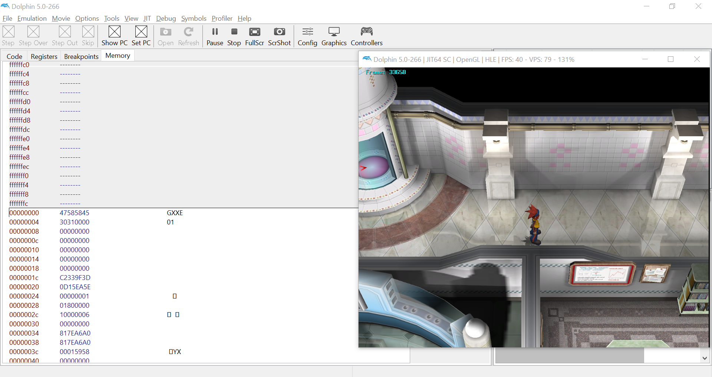
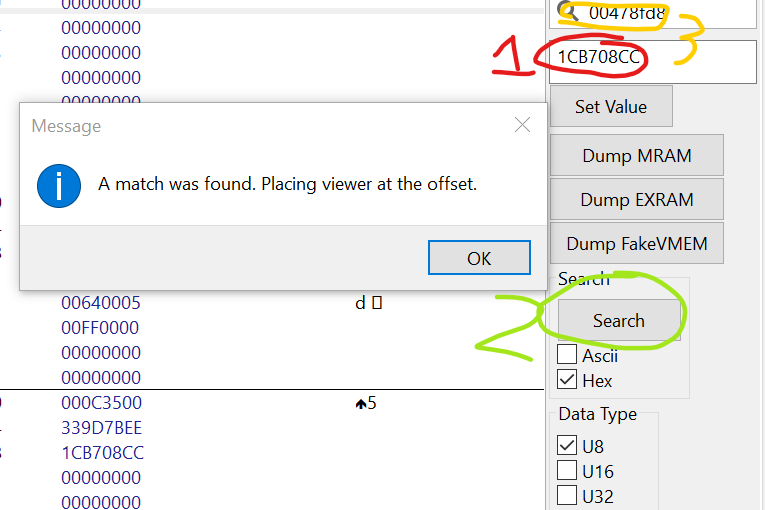
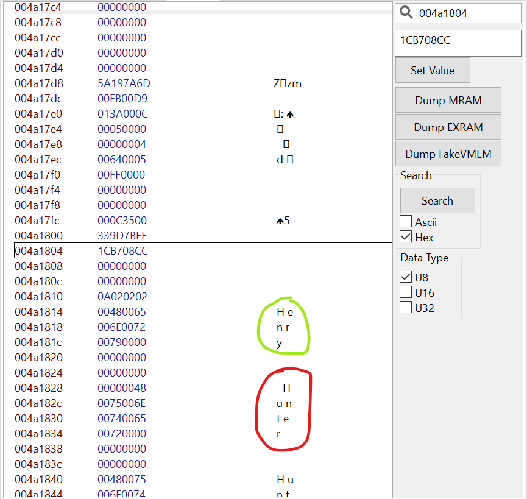
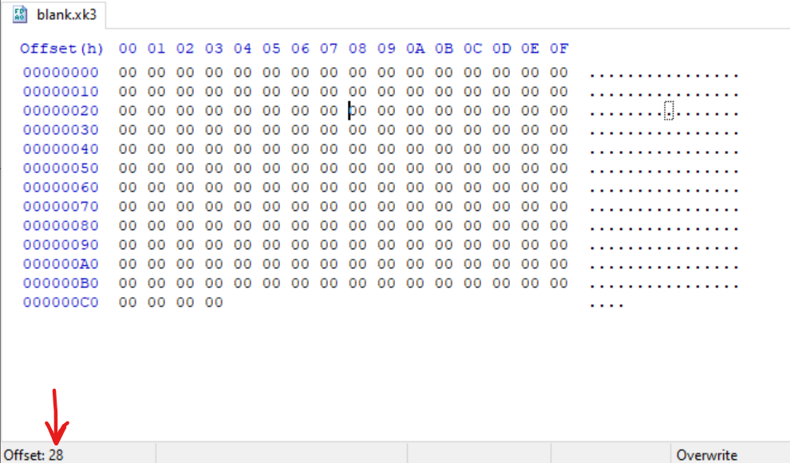
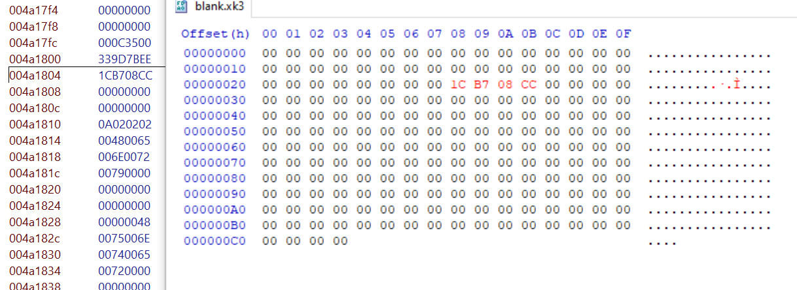

The Guide
Here's what you'll need:
The first step is to load up your save state in Dolphin, and navigate to the Memory window. I'll
be using Pokémon XD for this and Dolphin 5.0-266, but the process is the same on every
version that I've encountered. You'll also want to right-click and View as > ASCII,
so that it looks something like this:

Next, you need to put the PID of the Pokémon that you want to dump into the box labelled
1 below, then hit the Search button labelled 2, ensuring that Hex is
checked below it and not ASCII. It should pop up with a message saying that a match was found,
if it doesn't then try putting 80000000 into the box labelled 3 and
searching again.

You might have to search a couple of times before you actually find your Pokémon and not
just random data in the RAM — you know you have the right thing when you can see your
Pokémon's nickname (in this case, "Hunter") and OT name (in this case,
"Henry") in the data surrounding the PID, like so:

If it looks something like that, congrats! You've found your Pokémon. Now, it's
time to fire up your Hex Editor, and load up the blank.*k3 file you downloaded
earlier. Navigate to the offset 0x28 (or, 0x04 if you're editing
the Colo file). An easy way to tell the current offset in HxD is to look in the bottom left corner!

Ensuring you're in overwrite mode and not insert mode, enter your Pokémon's PID
at this offset as it appears in the Memory tab.

Now, scrolling up and down in the Memory tab as necessary, enter the rest of the data into the
hex editor, relative to the PID offset (everything before the PID goes before it, everything
after goes after), until you have reached both the start and the end of the file in your hex
editor.
If at any point you edit the file size, you've made a mistake!
Once finished, save the file. Load up your (working) save in PKHeX, and inject the .*k3
file you just created in the hex editor into your save! Assuming you didn't make any
mistakes, Congrats! You managed to rescue your Pokémon from the save state. If you made
any typos at all, however, your Pokémon is unfortunately now edited, so make sure you
double and triple check you copied the data from the Memory tab into the hex editor correctly!